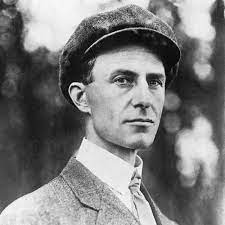
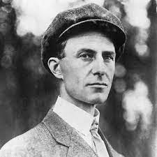

Company Story
How our family's hang-gliding empire can get you ready to soar on a new adventure!

Our Story
Our 5th generation family hang-gliding company has had its highs and lows. We have always been an outdoorsy family and that is how we started. 5 generations ago our family started a hiking and wilderness shop stocked with everything needed to survive in the outdoors. This was successful in our family until Harriet, the granddaughter of the founders stepped up with a new idea. Recently united with her husband Harry she decided that their company would pivot specifically into hang-gliding. As a child, Harriet had always loved Wilbur Wright and was fascinated with the idea of soaring through the sky. Now 2 generations after Harry and Harriet, we are as strong as ever with our wide variety of hang-gliding options and services. Still making Harry, Harriet, and Wilbur proud.
 

---------------------------------------------------------------------------------------------------------------
Here are some of our family's favorite hang-gliding spots:
- Yellowstone National Park
- Cedar Point/ Lake Erie
- Alleghany National Reservoir, New York
- Nantucket, Massachusetts
Hang-gliding Company we partner with in Lake Erie:
Cedar Point: Professor Delbert's Frontier Fling
Here is even more information on our family's favorite hang-gliding experiences
Download this file
Our Company is so proud of what we have been able to do during our years of operation. Here are our top 5 accomplishments:
- Provide sonsistent and superb service to all of our customers
- Sponsor a trip to Yellowstone with some of our most loyal customers
- Win the Local Small Business of the Year Award
- Win the National Small Town hang-gliding Shop Award: Happiest Hangliders
- Sponsor a local highschool football team
----------------------------------------------------------------------------------------------------------------
Here is the real question: Why does Grandma Harriet love Wilbur Wright so much?
Well, no one really knows, not even Grandpa Harry. We think it has to of with the freedom of flying. From that love of Wilbur, Harry, and Harriet were able to grow a successful business and a family who loved the freedom of hang-gliding and being up in the air. As our company has grown our message has stayed the same: help others experience the feeling of freedom that can come when you hanglide. As you explore our site, our services, and our products we hope you can see that!
Email us
Last Modified: